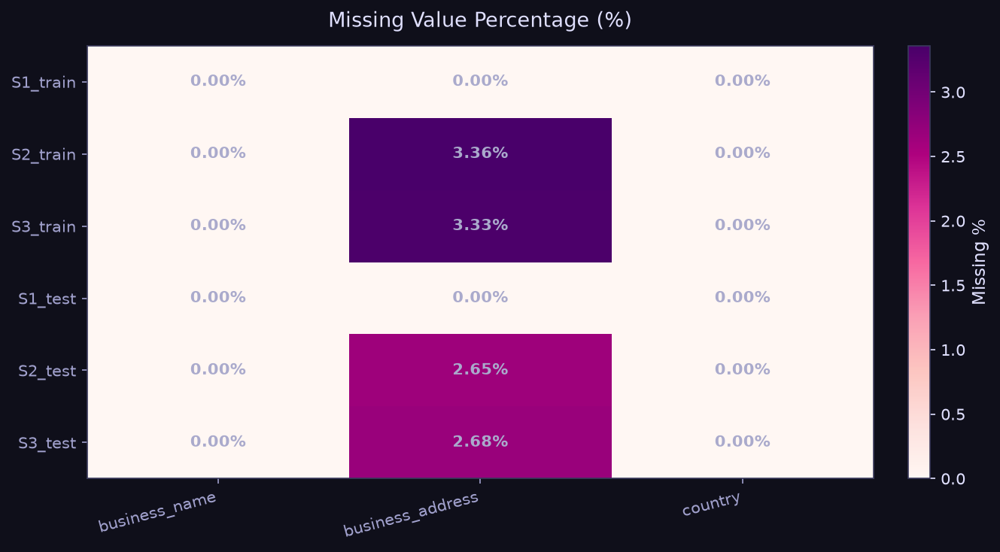
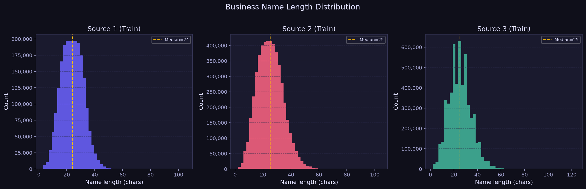
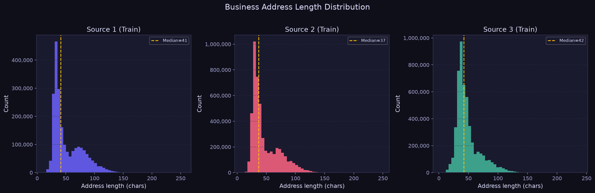
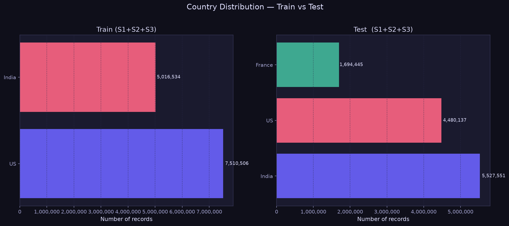

Amazon ML Challenge 2026 · Business Entity Resolution · Team Akatsuki

| Source | business_name missing % | business_address missing % | country missing % |
|---|---|---|---|
| S1_train | 0.0% | 0.0% | 0.0% |
| S2_train | 0.0% | 3.36% | 0.0% |
| S3_train | 0.0% | 3.33% | 0.0% |
| S1_test | 0.0% | 0.0% | 0.0% |
| S2_test | 0.0% | 2.65% | 0.0% |
| S3_test | 0.0% | 2.68% | 0.0% |
The missing value heatmap reveals the relative data completeness across all sources. Fields with high missing rates require careful handling — they cannot be used as hard-required blocking keys. Country-level missing values are particularly important because unseen labels (e.g., France) must be treated as a valid open-set label, not filtered.

| Metric | S1 Train | S2 Train | S3 Train | S1 Test |
|---|---|---|---|---|
| Record count | 2,206,821 | 5,034,614 | 5,285,590 | 1,732,544 |
| Unique names | 1,539,229 | 4,402,008 | 4,651,608 | 1,238,867 |
| Duplicate name % | 30.25% | 12.57% | 11.99% | 28.49% |
| Average length | 24.03 | 25.1 | 25.2 | 23.84 |
| Median length | 24.0 | 25.0 | 25.0 | 24.0 |
| Min length | 3 | 2 | 2 | 3 |
| Max length | 105 | 104 | 123 | 92 |
| Pattern | Records Containing Pattern |
|---|---|
| Corp / Corporation | 451,183 |
| Pvt / Private | 2,131,313 |
| Ltd / Limited | 2,699,409 |
| Inc / Incorporated | 1,106,422 |
| LLC | 1,455,401 |
| Ampersand (&) | 537,910 |
Legal suffix variants (Corp/Corporation, Pvt/Private, Ltd/Limited) are confirmed to appear in the dataset. These must be normalized — a token-level canonical form (e.g., mapping "Corporation" → "Corp") is required before computing name similarity features. The presence of "&" alongside "and" also requires disambiguation during preprocessing.

| Metric | S1 Train | S2 Train | S3 Train | S1 Test |
|---|---|---|---|---|
| Average length | 52.07 | 47.83 | 48.32 | 57.21 |
| Median length | 41.0 | 37.0 | 42.0 | 50.0 |
| Has numeric token % | 96.51% | 93.79% | 93.93% | 95.85% |
| Has postal code % | 6.67% | 7.59% | 7.55% | 4.37% |
| Min length | 11 | 8 | 2 | 11 |
| Max length | 256 | 249 | 240 | 268 |
| Pattern | Count |
|---|---|
| "Rd" (abbreviation) | 676,918 |
| "Road" (full form) | 1,750,197 |
| "St" (abbreviation) | 681,083 |
| "Street" (full form) | 1,003,784 |
Address fields contain significant abbreviation noise ("Rd" vs "Road", "St" vs "Street"). Postal code presence varies substantially across sources, making it a weak mandatory blocking key but a strong confirming feature. Address fields should be tokenized and soft-matched using token Jaccard or TF-IDF cosine similarity rather than exact matching.

| Source | France | India | US |
|---|---|---|---|
| S1_train | 0 | 883,188 | 1,323,633 |
| S2_train | 0 | 2,017,799 | 3,016,817 |
| S3_train | 0 | 2,115,547 | 3,170,056 |
| S1_test | 259,452 | 809,986 | 663,106 |
| S2_test | 703,378 | 2,312,565 | 1,871,330 |
| S3_test | 731,615 | 2,405,000 | 1,945,701 |
Key Finding: Training data contains the countries: India, US.
Test data contains: France, India, US.
France ⚠ PRESENT in Test.
Implication: Country must be treated as an open-set string label. Do NOT one-hot encode or hard-code a fixed set of {US, India} — France (and potentially other unseen countries) must flow through the pipeline without errors. Use country as a string-equality feature only, never as a categorical encoder with a fixed vocabulary.
Singletons (zero-match S1 entities) earn a full F_0.5 = 1.0 when correctly predicted as empty. They must not be ignored — the model must confidently produce an empty matched_entity_ids for these records. False merges on singletons are penalised heavily by the precision-weighted F_0.5 metric.
Generated by Member 2 EDA Script · Team Akatsuki · Amazon ML Challenge 2026